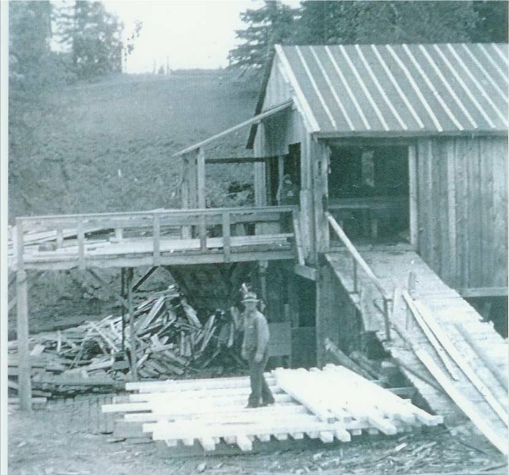
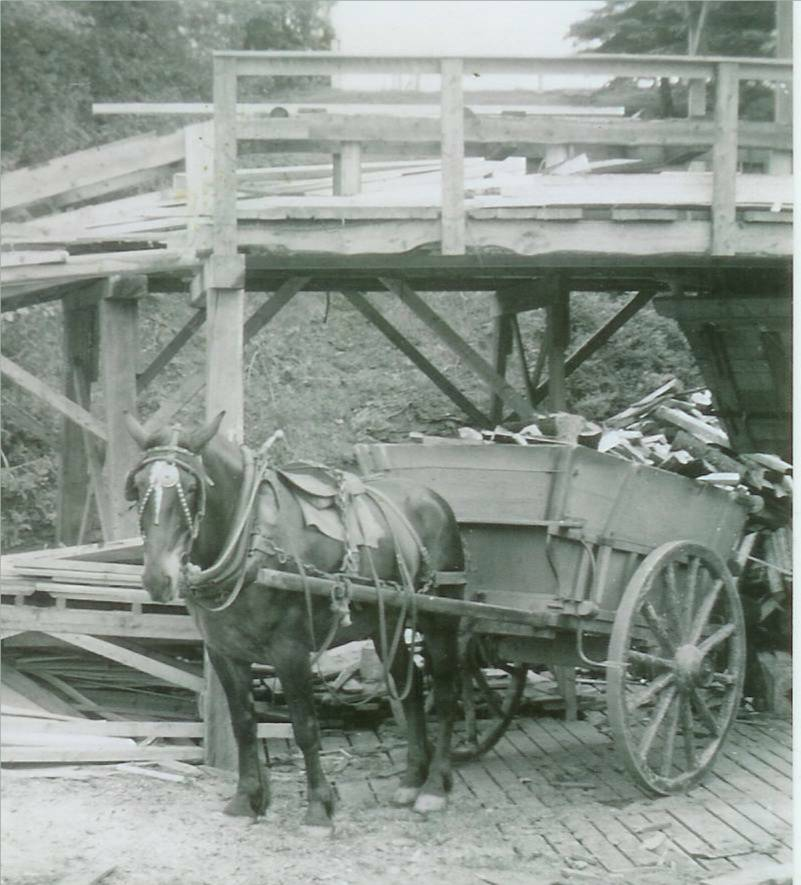
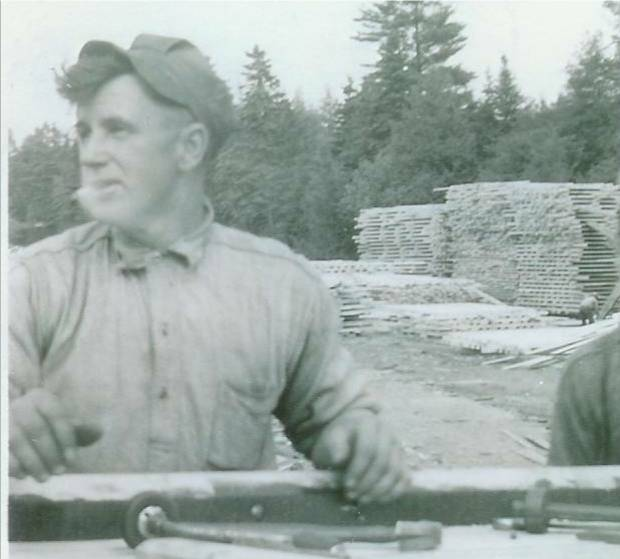

Fowlie's Mill



Although there were a number of sawmills in the area, it appears as though the first gristmill, paddled powered, was located on the Little Branch River. LOOKING BACK: A History of Bay du Vin New Brunswick provides the following quotation from the Gleaner in 1833:
"“Mr. George Fowlie erected a grist mill on the Little Black River, which commenced grinding last week. We have seen some bread made of the flour manufactured at this mill and it was of superior quality. It has a never failing stream of water and will be a great accommodation to the inhabitants of Bay du Vin and adjoining settlements where such an establishment was much wanted.”
Later a sawmill was constructed adjacent to the gristmill.
According to my recollection, in 1939, the gristmill was but a shell but the sawmill still operated and both were water powered. In fact, about this time, the old gristmill served as a training centre in carpentry and blacksmithing. It was part of a national program to provide some basic skill training to the many unemployed youth in the area. Participants boarded with local families including Has Ross and Hugh Gibson who boarded at my home. Shortly after, many of these young men were off to war.
Photos from the collection of Everard and Bertie MacLean – taken in 1940 from top to bottom show John Fowlie, John Fowlie’s horse and cart with a load of mill ends and George R. Fowlie, sawyer, showing piles of lumber in the background